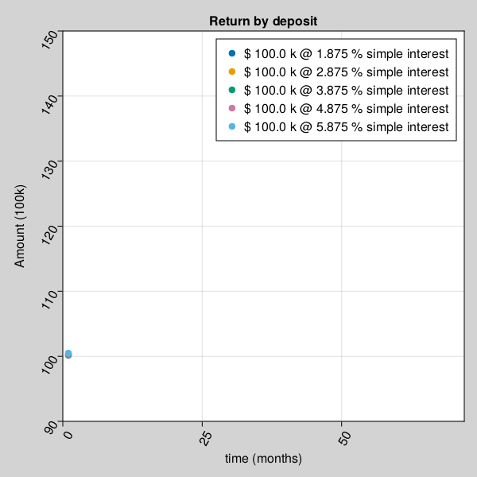
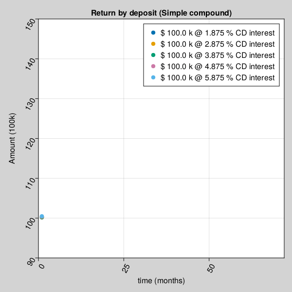
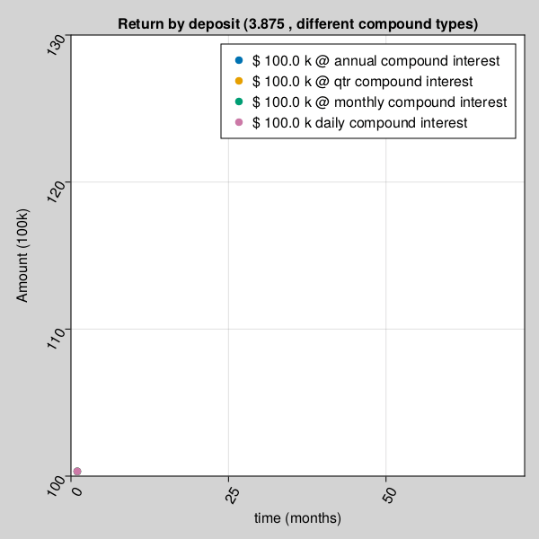

Finance Data
In this chapter, we will learn the basics of Data in context of real world Finance data.
Financial Data
what is data: Data is useful information described in terms of numbers, text, audio, video, images or any other format which can be read, write and understood in computers.
There is no such thing as Finance Math or Finance Data. Math is Math, the mother of all languages, and data is an object containing useful information. However, since our topic of interest is Finance, we will learn Mathematics from Finance data perspective, which again is no different, other than more focused on Financial statistical data analysis.
Numerical Data
As data can exist in any format in computers like images, video, audio or characters, as long as it can be represented in forms of numbers, is Numerical Data.
for example, a color can also be described in form of combinations of RGB values or grey scale, which when stored in computer memory is in form of numbers, it numerical data.
Presenting data in format of numbers, eventually allows numerical analysis to understand patterns in data.
Mutual Fund ROI example
| Group | Stock | ROI (%) |
|---|---|---|
| A | AAPL | 5.6 |
| A | TSLA | 5.6 |
| B | 4.3 | |
| B | TSLA | 4.3 |
| B | NIKE | 4.3 |
| C | MSFT | 3.3 |
| C | NIKE | 3.3 |
| .. | .. | .. |
using UnicodePlots;
tbl = (group=["A","A","B","B","B","C","C"],
stock=["AAPL","TSLA","GOOG","TSLA","NIKE","MSFT","NIKE"],
ROI=[5.6,5.6,4.3,4.3,4.3,3.3,3.3]);
barplot(string.(tbl.group,"|",tbl.stock), tbl.ROI,
ylabel="group", xlabel="ROI %", title="ROI Data", color=:red) ROI Data
┌ ┐
A|AAPL ┤■■■■■■■■■■■■■■■■■■■■■■■■■■■■■■■■■■■ 5.6
A|TSLA ┤■■■■■■■■■■■■■■■■■■■■■■■■■■■■■■■■■■■ 5.6
B|GOOG ┤■■■■■■■■■■■■■■■■■■■■■■■■■■■ 4.3
group B|TSLA ┤■■■■■■■■■■■■■■■■■■■■■■■■■■■ 4.3
B|NIKE ┤■■■■■■■■■■■■■■■■■■■■■■■■■■■ 4.3
C|MSFT ┤■■■■■■■■■■■■■■■■■■■■■ 3.3
C|NIKE ┤■■■■■■■■■■■■■■■■■■■■■ 3.3
└ ┘
ROI % using UnicodePlots;
histogram(randn(100_000) .* .1, nbins=40,
vertical=true, height=10) ┌ ┐
19 187 ⠀⠀⠀⠀⠀⠀⠀⠀██⠀⠀⠀⠀⠀⠀⠀⠀⠀
⠀⠀⠀⠀⠀⠀⠀⠀██⠀⠀⠀⠀⠀⠀⠀⠀⠀
⠀⠀⠀⠀⠀⠀⠀▆██▆⠀⠀⠀⠀⠀⠀⠀⠀
⠀⠀⠀⠀⠀⠀⠀████⠀⠀⠀⠀⠀⠀⠀⠀
⠀⠀⠀⠀⠀⠀⠀████⠀⠀⠀⠀⠀⠀⠀⠀
⠀⠀⠀⠀⠀⠀▆████▇⠀⠀⠀⠀⠀⠀⠀
⠀⠀⠀⠀⠀⠀██████⠀⠀⠀⠀⠀⠀⠀
⠀⠀⠀⠀⠀▂██████▂⠀⠀⠀⠀⠀⠀
⠀⠀⠀⠀⠀████████⠀⠀⠀⠀⠀⠀
0 ⠀⠀⠀▂▇████████▇▂⠀⠀⠀⠀
└ ┘
⠀-0.45⠀⠀⠀⠀⠀⠀⠀⠀⠀⠀⠀0.5⠀
⠀⠀⠀μ ± σ: 0.0 ± 0.1⠀⠀ Categorical Data
When a data set belongs to a set of finite possible values, is known as categorical data.
as shown in Mutual Fund ROI example, one Stock may belong to one or more groups. Group of funds in this case can be referred as Categorical data. Group= A | B | C is an example of categorical data.
Qualitative Data
Qualitative data in statistical analysis often is understood in terms of properties that approximates and characterizes.
as shown in Mutual Fund ROI example, AAPL & TSLA seems to be leading scorer in a given group. This qualitative descriptive assessment observes and characterize properties and patterns in a given dataset.
Quantitative Data
In contrast with Qualitative Data, Quantitative data is anything that can be counted or measured.
Random Data
Random data is an assignment of a numerical value to each possible outcome of an event space. It is often termed as any possible outcome from a Probability space.
Finite Data
It can be defined as data which can be counted.
for example, in above Mutual Fund ROI example, there are 3 possible Groups (A,B,C) which can can further contain 5 different type of stocks (AAPL, GOOG, MSFT, NIKE & TSLA).
Infinite Data
It can be defined as data which can NOT be counted.
for example, in above Mutual Fund ROI example, any given group can have any ROI between 3.3 and 5.6. As there can be infinite decimal ROI values in between, it can not be counted.
Univariate Multivariate
Univariate statistical analysis refers to data analysis, when output depends only on one variable.
Multivariate statistical data analysis is applicable where output depends on more than one variables.
Finance Data Example
Let's review some other examples, which are more familiar and relevant to Finance community.
BD = Buddy Deposit
CD = Certificate of Deposit
P = Principal amount
r = R/100
R = Rate of Interest
T = Time in years
n = compound (365 = daily, 12=monthly, 1=yearly)Buddy Deposit system
let’s say, one borrows money from buddy and return it on a simple yearly calculated interest condition (n=1). Lets assume, amount returned to friend has least constraints, like, if amount is returned less than 6 months, friends may not ask for any interest. For calculation purpose, we will keep formula very simple.
\[ BD = P (1 + r*t/n)\]
Using above formula, one can safely predict, The total amount accrued, principal plus interest, with simple interest on a principal of $100,000.00 at a rate of 3.875% per year over 7.5 years is $129,062.50.
Certificate Deposit with complex compound interest
\[ CD = P (1 + r/n)^n*T\]
Using above formula, one can safely predict, The total amount accrued, principal plus interest, with compound interest on a principal of $100,000.00 at a rate of 3.875% per year compounded n=365 times per year over 7.5 years is $133,724.24.
A = P + I
where P (principal) = $100,000.00 I (interest) = $33,724.24
Calculation Steps:
First, convert R as a percent to r as a decimal
r = R/100 r = 3.875/100
r = 0.03875 rate per year
Then solve the equation for A
A = P(1 + r/n)^nt
A = 100,000.00*(1 + 0.03875/365)^(365)(7.5)
A = 100,000.00*(1 + 0.00010616438356164)^(2737.5)
A = $133,724.24Mutual Fund Deposit
\[ MFDeposit == GOK <=> god*only*knows\]
Sample Deposit Data
Let's look at few sample results produced by different deposit types.
using GeneralLedger, UnicodePlots, DataFrames, Statistics
sampleSize = 100000;
df = GeneralLedger.getSampleDepositsData(sampleSize);
select!(df, :,
[:deposit, :rate] => ByRow((x1, x2)
-> contains(x1, "MF") ? x2 :
string(x1,"-",x2)) => :depositType);
dfG = groupby(df, :depositType);
dfT = sort(combine(dfG, :Total => mean),[:depositType]);
select!(dfT, :, :Total_mean => (x -> round.(x, digits=2)) =>
:Total_mean)
first(dfT, 9)| depositType | Total_mean |
|---|---|
| CD-annual | 115225.67 |
| CD-daily | 115458.89 |
| CD-monthly | 115439.69 |
| CD-qtr | 115400.2 |
| Group A | 167252.18 |
| Group B | 125003.21 |
| Group C | 108021.23 |
| Group D | 73883.71 |
| buddy-simple | 114375.0 |
Univariate and Multivariate analysis
Univariate statistical analysis refers to data analysis, when output depends only on one variable.
Multivariate statistical data analysis is applicable where output depends on more than one variables.
For example, in case of Buddy Deposit system, your friend promised to pay you back borrowed money with or without any interest or fixed or non-fixed time period (whenever available). After all, Buddy don't charge interest. In this case, amount received entirely depends on Principal amount borrowed, is a case if simple Univariate analysis.
In other case, when money is deposited as an investment, amount received on maturity depends on Principal amount, rate of interest, duration and interest type etc. is an example of Multivariate statistical analysis.
Let's take a closer look at few Univariate & Multivariate statistical analysis example, how amount received on maturity depends on associated variables.
for example, Amount received after a buddy deposit depends on interest rate and time.
using GeneralLedger, CairoMakie;
fileName = "../assets/bd_appendPlt1.gif";
rate = [1.875, 2.875, 3.875, 4.875, 5.875];
deposit = GeneralLedger.Deposit(100_000.0, rate[1], 1.0, 60.0);
points1 = Observable(Point2f[(0, 0)]);
points2 = Observable(Point2f[(0, 0)]);
points3 = Observable(Point2f[(0, 0)]);
points4 = Observable(Point2f[(0, 0)]);
points5 = Observable(Point2f[(0, 0)]);
# titleText = Observable(0.0) # uncomment to display $$ in title
fig, ax = scatter(points1;
figure = (;backgroundcolor = :lightgrey, resolution=(600,600)),
axis = (;
title="Return by deposit",
# title = @lift("Total Return = $($titleText)"),
xlabel="time (months)",
ylabel="Amount (100k)",
xticklabelrotation=pi/3,
yticklabelrotation=pi/3,
limits = (0, 72, 90, 150)
), label = "\$ $(deposit.principal/1000) k @ $(rate[1]) % simple interest");
scatter!(ax, points2; label = "\$ $(deposit.principal/1000) k @ $(rate[2]) % simple interest");
scatter!(ax, points3; label = "\$ $(deposit.principal/1000) k @ $(rate[3]) % simple interest");
scatter!(ax, points4; label = "\$ $(deposit.principal/1000) k @ $(rate[4]) % simple interest");
scatter!(ax, points5; label = "\$ $(deposit.principal/1000) k @ $(rate[5]) % simple interest");
axislegend();
frames = 1:60;
record(fig, fileName, frames;
framerate = 10) do t
deposit.time = t
deposit.rate = rate[1]
points1[] = push!(points1[], Point2f(t, GeneralLedger.getSampleBDeposit(deposit)[2]/1000))
deposit.rate = rate[2]
points2[] = push!(points2[], Point2f(t, GeneralLedger.getSampleBDeposit(deposit)[2]/1000))
deposit.rate = rate[3]
points3[] = push!(points3[], Point2f(t, GeneralLedger.getSampleBDeposit(deposit)[2]/1000))
deposit.rate = rate[4]
points4[] = push!(points4[], Point2f(t, GeneralLedger.getSampleBDeposit(deposit)[2]/1000))
deposit.rate = rate[5]
points5[] = push!(points5[], Point2f(t, GeneralLedger.getSampleBDeposit(deposit)[2]/1000))
# titleText[] = round(new_point[2], digits=2)
end
nothing
## display file = fileName
for example, Amount received after a certificate deposit depends on interest rate, compound type and time.
using GeneralLedger, CairoMakie;
fileName = "../assets/bd_appendPlt2.gif";
rate = [1.875, 2.875, 3.875, 4.875, 5.875];
deposit = GeneralLedger.Deposit(100_000.0, rate[1], 1.0, 60.0);
points1 = Observable(Point2f[(0, 0)]);
points2 = Observable(Point2f[(0, 0)]);
points3 = Observable(Point2f[(0, 0)]);
points4 = Observable(Point2f[(0, 0)]);
points5 = Observable(Point2f[(0, 0)]);
# titleText = Observable(0.0) # uncomment to display $$ in title
fig, ax = scatter(points1;
figure = (;backgroundcolor = :lightgrey, resolution=(600,600)),
axis = (;
title="Return by deposit (Simple compound)",
# title = @lift("Total Return = $($titleText)"),
xlabel="time (months)",
ylabel="Amount (100k)",
xticklabelrotation=pi/3,
yticklabelrotation=pi/3,
limits = (0, 72, 90, 150)
), label = "\$ $(deposit.principal/1000) k @ $(rate[1]) % CD interest");
scatter!(ax, points2; label = "\$ $(deposit.principal/1000) k @ $(rate[2]) % CD interest");
scatter!(ax, points3; label = "\$ $(deposit.principal/1000) k @ $(rate[3]) % CD interest");
scatter!(ax, points4; label = "\$ $(deposit.principal/1000) k @ $(rate[4]) % CD interest");
scatter!(ax, points5; label = "\$ $(deposit.principal/1000) k @ $(rate[5]) % CD interest");
axislegend();
frames = 1:60;
record(fig, fileName, frames;
framerate = 10) do t
deposit.time = t
deposit.rate = rate[1]
points1[] = push!(points1[], Point2f(t, GeneralLedger.getSampleCDeposit(deposit)[2]/1000))
deposit.rate = rate[2]
points2[] = push!(points2[], Point2f(t, GeneralLedger.getSampleCDeposit(deposit)[2]/1000))
deposit.rate = rate[3]
points3[] = push!(points3[], Point2f(t, GeneralLedger.getSampleCDeposit(deposit)[2]/1000))
deposit.rate = rate[4]
points4[] = push!(points4[], Point2f(t, GeneralLedger.getSampleCDeposit(deposit)[2]/1000))
deposit.rate = rate[5]
points5[] = push!(points5[], Point2f(t, GeneralLedger.getSampleCDeposit(deposit)[2]/1000))
# titleText[] = round(new_point[2], digits=2)
end
nothing
## display file = fileName
Amount received after a certificate deposit depends on different compound interest rate type and time.
using GeneralLedger, CairoMakie;
fileName = "../assets/bd_appendPlt3.gif";
rate = [1.875, 2.875, 3.875, 4.875, 5.875];
compound = [1.0, 4.0, 12.0, 365.0]
deposit = GeneralLedger.Deposit(100_000.0, rate[3], 1.0, 60.0);
points1 = Observable(Point2f[(0, 0)]);
points2 = Observable(Point2f[(0, 0)]);
points3 = Observable(Point2f[(0, 0)]);
points4 = Observable(Point2f[(0, 0)]);
points5 = Observable(Point2f[(0, 0)]);
# titleText = Observable(0.0) # uncomment to display $$ in title
fig, ax = scatter(points1;
figure = (;backgroundcolor = :lightgrey, resolution=(600,600)),
axis = (;
title="Return by deposit ($(rate[3]) , different compound types)",
# title = @lift("Total Return = $($titleText)"),
xlabel="time (months)",
ylabel="Amount (100k)",
xticklabelrotation=pi/3,
yticklabelrotation=pi/3,
limits = (0, 72, 100, 130)
), label = "\$ $(deposit.principal/1000) k @ annual compound interest");
scatter!(ax, points2; label = "\$ $(deposit.principal/1000) k @ qtr compound interest");
scatter!(ax, points3; label = "\$ $(deposit.principal/1000) k @ monthly compound interest");
scatter!(ax, points4; label = "\$ $(deposit.principal/1000) k daily compound interest");
axislegend();
frames = 1:60;
record(fig, fileName, frames;
framerate = 10) do t
deposit.time = t
deposit.compound = compound[1]
points1[] = push!(points1[], Point2f(t, GeneralLedger.getSampleCDeposit(deposit)[2]/1000))
deposit.compound = compound[2]
points2[] = push!(points2[], Point2f(t, GeneralLedger.getSampleCDeposit(deposit)[2]/1000))
deposit.compound = compound[3]
points3[] = push!(points3[], Point2f(t, GeneralLedger.getSampleCDeposit(deposit)[2]/1000))
deposit.compound = compound[4]
points4[] = push!(points4[], Point2f(t, GeneralLedger.getSampleCDeposit(deposit)[2]/1000))
# titleText[] = round(new_point[2], digits=2)
end
nothing
## display file = fileName